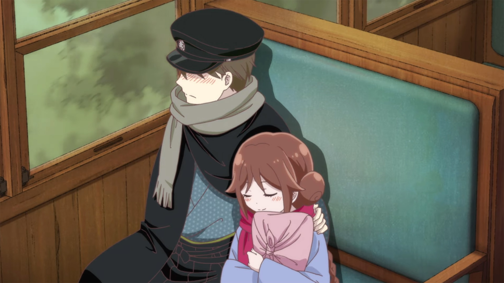

SMASH Senpai
Top 10 Romance Anime Where the Couple Lives Under the Same Roof
Romance anime becomes something entirely different when the couple starts living together. There’s no escape from awkward moments, no hiding feelings, and no distance to soften emotional tension.
These anime focus on couples who share the same space — whether it’s marriage, forced cohabitation, or an unexpected living arrangement that slowly turns into genuine love. Every small interaction matters. Every silence carries weight.
What makes these romances special isn’t dramatic confessions or love triangles. It’s daily life. Cooking together. Arguing over nothing. Falling asleep in the same room. And realizing that love grows strongest in the quiet moments.
From wholesome and heartwarming to awkward, emotional, and even spicy, these stories explore what happens when two people don’t just fall in love — they live it.
These are the Top 10 Romance Anime Where the Couple Lives Together — intimate, emotional, and impossible to look away from.
Sponsored
#1 Tonikawa: Over the Moon for You

Tonikawa: Over the Moon for You takes the concept of romance anime and flips it entirely on its head. Instead of building toward a confession, the story begins with marriage. Nasa Yuzaki and Tsukasa Tsukuyomi start living together almost immediately, turning the series into a gentle exploration of newlywed life rather than a chase for love.
What makes Tonikawa special is how it focuses on everyday intimacy. Cooking meals together. Brushing teeth side by side. Awkward moments where neither knows how to act like a proper couple yet. Their love isn’t loud or dramatic — it’s quiet, shy, and deeply comforting.
Tsukasa’s calm confidence contrasts beautifully with Nasa’s nervous enthusiasm. He constantly overthinks what it means to be a good husband, while she approaches love with natural ease. Living together forces them to confront what commitment actually looks like, not in theory, but in daily life.
There are no toxic misunderstandings or forced drama. The tension comes from emotional vulnerability — learning how to open up, how to rely on another person, and how to grow together under the same roof. Tonikawa proves that romance doesn’t need conflict to be engaging. Sometimes, love is simply about choosing each other every day.
- Episode count: 24+
- Genre: Romance, Slice of Life, Comedy
- Known for: Immediate marriage and wholesome intimacy
- Core theme: Love as everyday companionship

play anime smash or pass here (not sponsored)
SMASH SENPAI – Smash or Pass#2 More Than a Married Couple, But Not Lovers

More Than a Married Couple, But Not Lovers thrives on emotional tension created by forced intimacy. Jirou Yakuin and Akari Watanabe are paired together in a bizarre school marriage program, requiring them to live together and act like a real couple — despite being in love with other people.
The anime wastes no time creating friction. Sharing a bedroom, navigating jealousy, and constantly blurring boundaries pushes both characters into uncomfortable territory. Akari is loud, expressive, and emotionally open, while Jirou is insecure, awkward, and terrified of emotional closeness.
What makes the romance compelling is how living together exposes feelings they can’t ignore. Small gestures — jealousy over meaningless comments, moments of physical closeness, emotional reliance during stress — slowly chip away at their original intentions. The more they pretend to be a couple, the more real it starts to feel.
The series balances spice with genuine emotional development. Beneath the fanservice and comedy lies a story about confusion, self-worth, and choosing who you truly want to be with. Living together forces honesty, and neither character can remain emotionally untouched by it.
- Episode count: 12
- Genre: Romance, Comedy, Ecchi
- Known for: Forced cohabitation and romantic tension
- Core theme: Feelings growing through proximity
#3 My Stepmom’s Daughter Is My Ex

My Stepmom’s Daughter Is My Ex delivers one of the most uncomfortable yet emotionally fascinating living-together romances in anime. Mizuto and Yume were once a couple — awkward, immature, and emotionally messy. After breaking up, they unexpectedly end up living together again when their parents remarry.
Unlike typical romance anime, this series begins after love has already failed. Both characters carry unresolved feelings, regrets, and emotional scars. Living together forces them to confront what went wrong — not through dramatic confrontations, but through lingering tension and silence.
The brilliance of the show lies in its restraint. Instead of constant arguments or exaggerated comedy, it focuses on quiet moments — stolen glances, suppressed jealousy, and emotional walls that crumble slowly. Their shared past makes every interaction heavier, more loaded, and deeply personal.
The anime explores how love doesn’t simply disappear after a breakup. Feelings evolve, harden, or resurface in unexpected ways. By forcing two ex-lovers to share a home, the series creates a realistic portrayal of emotional maturity, regret, and the possibility of reconnecting — or finally moving on.
- Episode count: 12
- Genre: Romance, Drama, Slice of Life
- Known for: Awkward cohabitation between ex-lovers
- Core theme: Love after heartbreak
#4 A Galaxy Next Door

A Galaxy Next Door stands out as a rare romance anime that focuses on adult responsibility, emotional stability, and quiet companionship. Ichiro Kuga is a struggling manga artist barely holding his life together while taking care of his younger siblings. When Shiori Goshiki enters his life as an assistant, their professional relationship quickly turns personal.
Due to unexpected circumstances, the two begin living together, forcing their relationship to evolve rapidly. Unlike high school romances, this anime treats cohabitation seriously. Rent, work stress, exhaustion, and emotional boundaries all play a role in shaping their connection. Love isn’t just about feelings — it’s about responsibility.
Shiori’s calm, mysterious demeanor contrasts with Ichiro’s constant anxiety. Living together allows them to understand each other on a deeper level. Late-night conversations, shared meals, and quiet support slowly build trust and affection. Their bond grows naturally, without forcing drama or exaggerated conflict.
The series excels in portraying intimacy through routine. Simply being present for one another becomes an act of love. A Galaxy Next Door proves that romance doesn’t need chaos to feel meaningful — sometimes, stability is the most romantic thing of all.
- Episode count: 12
- Genre: Romance, Slice of Life, Supernatural
- Known for: Mature cohabitation and emotional calm
- Core theme: Love built on trust and responsibility
Sponsored
#5 Taisho Otome Fairy Tale
Taisho Otome Fairy Tale is a gentle, heartwarming romance set during Japan’s Taisho era. Tamahiko Shima is a withdrawn, physically injured young man who has isolated himself from the world. When Yuzuki Tachibana is sent to live with him as his future bride, their lives change forever.
From the moment they begin living together, the anime emphasizes emotional healing. Tamahiko believes himself to be broken and unlovable, while Yuzuki approaches life with warmth, patience, and quiet optimism. Their shared home becomes a place of recovery, not just romance.
What makes this story powerful is its simplicity. Yuzuki’s kindness isn’t dramatic — it’s consistent. Cooking meals, cleaning the house, and caring for Tamahiko slowly bring him back to life. Living together allows love to grow naturally, free from pressure or expectation.
The romance feels deeply sincere. There’s no manipulation, no forced tension — just two people learning how to rely on each other. Taisho Otome Fairy Tale reminds viewers that love can be soft, healing, and quietly transformative.
- Episode count: 12
- Genre: Romance, Historical, Slice of Life
- Known for: Healing atmosphere and emotional warmth
- Core theme: Love as emotional restoration
#6 Engaged to the Unidentified

Engaged to the Unidentified blends romantic comedy with supernatural elements to create a unique living-together romance. On her birthday, Kobeni Yonomori suddenly learns she is engaged — and her fiancé is already moving into her home. From the start, privacy becomes nonexistent.
Hakuya Mitsumine is calm, polite, and mysterious, hiding more than just his feelings. Living together places Kobeni in a constant state of embarrassment and confusion. Every interaction feels too close, too personal, and emotionally overwhelming.
The anime uses comedy to explore intimacy. Shared living spaces lead to misunderstandings, blushing encounters, and emotional vulnerability. As Kobeni grows accustomed to Hakuya’s presence, her fear slowly turns into comfort — and eventually affection.
Beneath the lighthearted tone lies a story about acceptance. Love isn’t something Kobeni chooses at first — it’s something she grows into. Engaged to the Unidentified shows how proximity, patience, and consistency can turn unfamiliarity into genuine love.
- Episode count: 12
- Genre: Romance, Comedy, Supernatural
- Known for: Sudden engagement and cohabitation
- Core theme: Love through gradual acceptance
Sponsored
#7 I’m Getting Married to the Girl I Hate in My Class

I’m Getting Married to the Girl I Hate in My Class is built entirely around forced proximity and emotional whiplash. Saito and Akane are constant rivals at school, clashing over everything from grades to personality. They genuinely cannot stand each other — which makes what happens next even more chaotic.
Due to family arrangements, the two are suddenly forced into an engagement and begin living together in secret. Publicly, they act like enemies. Privately, they share a home, meals, and daily life. This double life becomes the core tension of the series.
Living together slowly exposes cracks in their hostility. Late-night arguments turn into conversations. Small acts of care replace insults. As they witness each other’s vulnerabilities, the hatred begins to feel less genuine — and far more complicated.
The anime thrives on emotional contrast. The same person you fight at school becomes the one waiting for you at home. I’m Getting Married to the Girl I Hate in My Class delivers a sharp, entertaining romance that proves sometimes the strongest love starts with the strongest friction.
- Status: Upcoming / Anticipated
- Genre: Romance, Comedy, School
- Known for: Enemies-to-lovers marriage setup
- Core theme: Love born from forced intimacy
#8 A Couple of Cuckoos

A Couple of Cuckoos takes the concept of living together and turns it into a full-blown romantic disaster — in the best way possible. Nagi Umino discovers he was switched at birth and is suddenly engaged to Erika Amano, a girl he barely knows. To make things worse, they’re forced to live together.
Their cohabitation begins awkward and chaotic. Different lifestyles, clashing personalities, and zero emotional preparation make daily life uncomfortable. What starts as obligation slowly becomes familiarity as shared routines form between them.
The situation grows even messier as additional romantic interests enter the picture. Despite the love triangle chaos, living together gives Nagi and Erika something the others don’t have — genuine shared experiences. Late nights, casual conversations, and unguarded moments push their bond deeper than expected.
A Couple of Cuckoos excels at showing how proximity creates emotional shortcuts. Feelings develop not because of destiny, but because of shared space. It’s messy, dramatic, and undeniably addictive.
- Episode count: 24
- Genre: Romance, Comedy, Harem
- Known for: Love triangles and cohabitation chaos
- Core theme: Feelings shaped by shared living
#9 My Wife Is the Student Council President

My Wife Is the Student Council President wastes absolutely no time. Hayato Izumi loses a school election — and suddenly gains a wife. Ui Wakana, the new student council president, announces they are engaged and immediately begins living with him.
The anime leans heavily into its ecchi roots, but beneath the fanservice lies a genuine living-together dynamic. Hayato is constantly overwhelmed, embarrassed, and emotionally confused. Ui, on the other hand, is confident and unapologetically affectionate.
Sharing a home blurs emotional boundaries fast. What begins as a political arrangement gradually becomes personal. Living together forces Hayato to confront his feelings rather than avoid them.
The short episode format keeps things fast-paced, but the core idea remains strong: intimacy accelerates when privacy disappears. My Wife Is the Student Council President is bold, shameless, and surprisingly effective at showing how closeness breeds attachment.
- Episode count: 24 (short episodes)
- Genre: Romance, Ecchi, Comedy
- Known for: Immediate engagement and fanservice
- Core theme: Intimacy through shared space
#10 Romantic Killer

Romantic Killer flips the romance genre on its head. Anzu Hoshino wants nothing to do with love — she prefers games, chocolate, and cats. Unfortunately, a magical being decides to ruin her life by forcing her into romantic scenarios.
One of the strongest arcs involves forced living situations designed to push romance forward. Anzu repeatedly finds herself sharing space with potential love interests, despite actively resisting every trope. The result is chaotic, hilarious, and unexpectedly heartfelt.
Living together becomes a battleground. Anzu refuses emotional vulnerability, while the situations around her slowly expose her softer side. Unlike traditional romance, this anime allows emotional growth without forcing love immediately.
Romantic Killer succeeds because it understands romance — even while mocking it. Shared space creates connection, whether the characters want it or not. It’s a modern, self-aware take on cohabitation romance that feels fresh and honest.
- Episode count: 12
- Genre: Romance, Comedy, Parody
- Known for: Anti-romance protagonist
- Core theme: Love develops even when resisted
Play Smash or Pass on SMASH Senpai.
 PLAY SMASH OR PASS
PLAY SMASH OR PASS